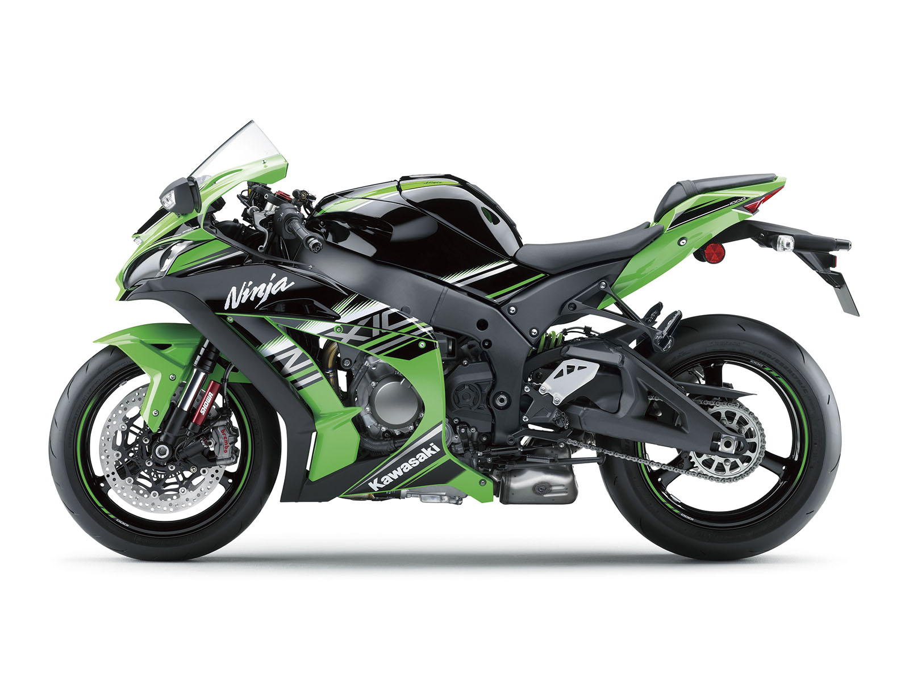

第二頁
第三頁
第四頁

Ninja ZX10R
過去，NinjaZX-10R已經在WSBK舞台上清楚地向世人證明其王者地位
現在，全新NinjaZX-10R更完整吸納現役冠軍車手T.sykes & J.Rea賽事經驗回饋，再次進化! 首次搭載於市售車的Balance Free Front Frok前叉，
是由SBK廠車實戰經驗與技術回饋累積而來 搭配上頂級Brembo制動系統，除了路感更明確外，更讓騎士在進彎前能充滿信心的全力減速 引擎方面以輕量20%的曲軸及更綿密的齒比，
搭配最先進的IMU六軸感知系統能完整掌控車身動態，讓S-KTRC(Sport-Kawasaki TRaction Control) 循跡系統及KIBS(Kawasaki Intelligent anti-lock Brake System)智慧防鎖死煞車系統作動更精確，
讓騎士只需專注於路線與進出彎點的選擇，即能做出意想不到的圈速